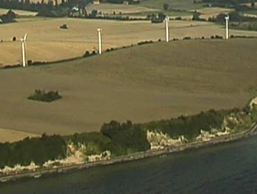

Aerial
photograph
© 1999 Soren Krohn

Wind
Shear and Escarpments

Do
not
Include the Altitude of Your Terrain in Wind Shear Calculations
The aerial photograph above shows a good site for wind turbines
along a shoreline with the turbines standing on a cliff which
is about 10 m (30 ft.) tall. It is a common mistake to believe
that in this case one may add the height of the cliff to the
height of the wind turbine tower to obtain the effective height
of the wind turbine, when one is doing wind speed calculations,
at least when the wind is coming from the sea.
 This is patently wrong. The cliff in the
front of the picture will create turbulence,
and brake the wind even before it reaches the cliff. It is therefore
not a good idea to move the turbines closer to the cliff. That
would most likely lower energy output, and cause a lower lifetime
for the turbines, due to more tear and wear from the turbulence.
This is patently wrong. The cliff in the
front of the picture will create turbulence,
and brake the wind even before it reaches the cliff. It is therefore
not a good idea to move the turbines closer to the cliff. That
would most likely lower energy output, and cause a lower lifetime
for the turbines, due to more tear and wear from the turbulence.
 If we had the choice, we would much rather
have a nicely rounded hill in the direction facing the sea, rather
than the escarpment you see in the picture. In case of a rounded
hill, we might even experience a speed up effect, as we explain
later when we get to the page on the hill
effect.
If we had the choice, we would much rather
have a nicely rounded hill in the direction facing the sea, rather
than the escarpment you see in the picture. In case of a rounded
hill, we might even experience a speed up effect, as we explain
later when we get to the page on the hill
effect.
© Copyright 1999 Soren Krohn
Updated 6 August 2000
http://www.windpower.org/tour/wres/escarp.htm